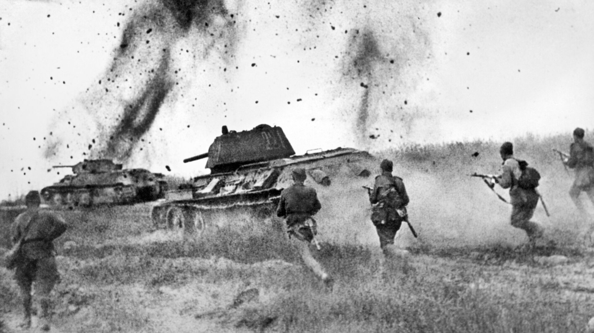
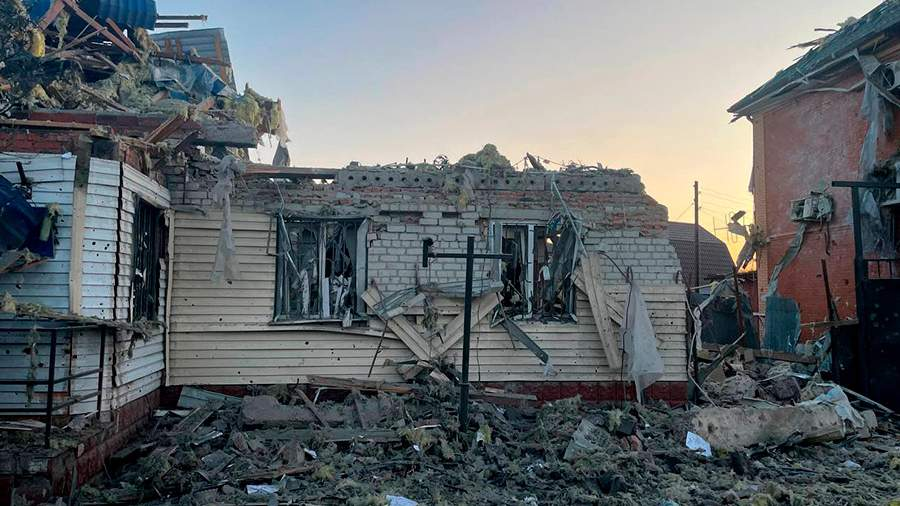

Курская битва
Курская битва, сражение, происходившее в июле—августе 1943 года, было крупнейшей танковой битвой Второй мировой войны. Сражение развернулось на Курской дуге и стало решающим поворотным моментом на Восточном фронте. В ней участвовали миллионы солдат, тысячи танков, самолетов и артиллерийских установок. Немецкая армия стремилась вернуть инициативу, но сражение завершилось победой советских войск, что стало важнейшим этапом в освобождении территорий, занятых фашистами.
В результате Курской битвы был уничтожен крупный фашистский контингент, что позволило советским войскам перейти в наступление. Битва оказала огромное влияние на ход войны и вошла в историю как одна из самых масштабных операций Второй мировой.
События 6 августа 2024 года
6 августа 2024 года стал днем трагических событий для Курской области. Украинские войска впервые пересекли границу и проникли на территорию региона. Это событие привлекло внимание всего мирового сообщества.В результате столкновений, происходивших на протяжении нескольких дней, в области были разрушены инфраструктурные объекты, а также пострадали многие мирные жители. ВСУ захватили несколько населённых пунктов Курской области.
Этот день стал трагическим не только для Курской области, но и для всей России. В ответ на агрессию российские силы провели операции по защите территории, и были предприняты шаги для стабилизации ситуации. Этот момент в истории региона отметил собой начало нового этапа.